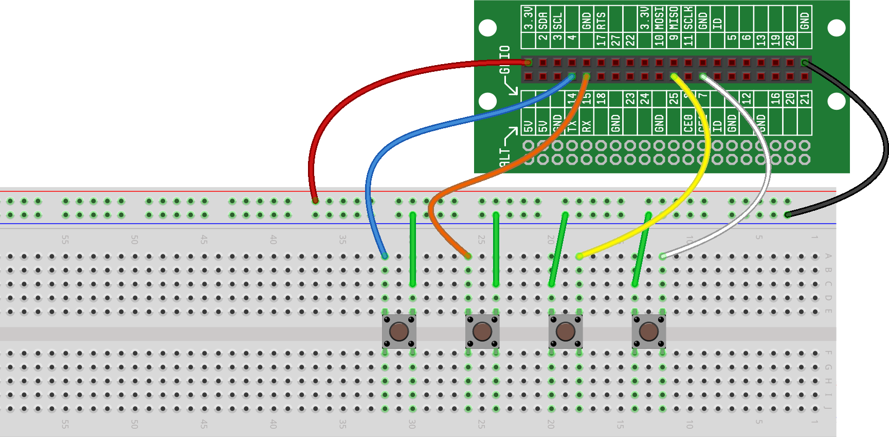

In our previous projects, GPIO AS OUTPUTS (CONTROLLING LEDS) and GPIO AS INPUTS (READING BUTTONS), we introduced the concept of controlling and monitoring the state of a component (LEDs and buttons) using GPIOs as inputs/outputs. In the gaming world, this concept gets more useful -- and interesting -- as we add more components. Unfortunately, it can also get tricky to manage inputs from, and outputs to, lots of different components. Which is why it's important to learn how to use lists to manage sets of similar components. We also will often use loops along with those lists to efficiently handle the information flowing to and from those components.
In this project, we're going to wire four buttons to four different GPIOs. Based on the projects we've already done, it shouldn't be too difficult to create the circuit. But, then we're going to handle the input from those buttons using a list, instead of trying to manage input from each button individually. While this project will focus on buttons, the concept of monitoring inputs and controlling outputs using lists and loops can be applied to pretty much any component.
Wiring four buttons to four different GPIOs is no different than wiring a single button to a GPIO and then replicating that circuit four times. Give it a try!
Here are three things to remember as you're wiring your buttons:
The un-connected sides of each button should sit on different connect strips
One side of each button should be wired to ground
One side of each button should be wired to your chosen GPIO
Here is what your breadboard should look like at this point (we've chosen to use GPIO14, GPIO15, GPIO25 and GPIO7 for our buttons):

For this project, we're simply going to create a list of buttons and
then use a for
loop to cycle through the list and determine which buttons are current
being pressed.
Here is what that code will look like:
Let's look at this code in more detail:
On Line 1, we import the module we will need to initialize our buttons
On Line 2, we import the time
module, as we're going to be using a loop and will want to slow the
repetition of the loop down a bit
On Line 4, we create a list called buttons that
contains the
initialization for each of the four buttons we've created.
For
each button in the list, we call the Button() function, which returns a
"button object" for each item in the my_buttons variable.
We talked about that a bit in VARIABLES &
ASSIGNMENTS,
but the important thing to understand is that we can use these objects
to access Button() functions and attributes
On Line 6, we start a loop (this is where we'll spend all of our time once we run the program)
On Line 7, we create a for
loop that we use to cycle through the items in the my_buttons
list
On Line 8, we check to see if the next button in our list is currently being pressed
On Line 9, if the button we observed in Line 8 was being pressed, we send that information to the Output Window
Lines 7-9 will loop for each of the buttons in the list my_buttons
On
Line 10, we pause briefly (so we don't hog the processor) and then
return to the top of the while
loop to check our buttons again
By using lists and loops, we've reduced the amount of code required to create and test four buttons from about 20 lines of code down to about 6 lines of code. While that might not seem significant, imagine if you were creating something with dozens or hundreds of buttons (like a piano keyboard that has 88 keys)? The code to monitor the 88 keys on a piano keyboard would be no longer than the code you see above. When you run this code, you'll see that every time you press a button, that information is sent to the Output Window. If you want to try a variation of this project, why not try replacing the buttons with LEDs, and then rewrite the code to flash the LEDs instead of reading the buttons?